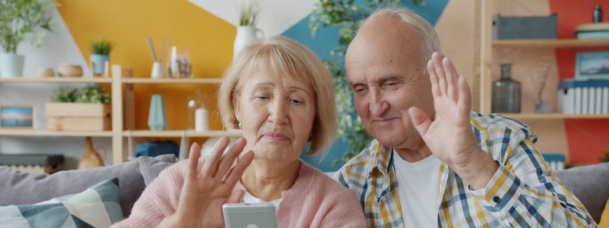
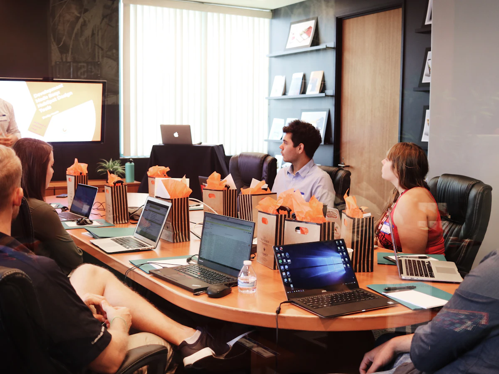

Premiers pas sur ordinateur
Utiliser la souris et le clavier, ranger ses fichiers, naviguer sur Internet, installer un logiciel en toute sécurité.
Devenez autonome avec vos outils numériques. Cours particuliers à domicile pour les particuliers et les seniors, sessions sur mesure dans vos locaux pour former vos équipes. Toujours au rythme de chacun, sur votre propre matériel.
Un formateur patient vient chez vous et part de vos besoins concrets. Pas de cours théorique : on pratique ensemble, sur votre ordinateur, votre tablette ou votre téléphone.

Utiliser la souris et le clavier, ranger ses fichiers, naviguer sur Internet, installer un logiciel en toute sécurité.
iPhone, iPad ou Android : appels vidéo, WhatsApp, photos, applications utiles, réglages pour mieux lire et entendre.
Envoyer des e-mails et des pièces jointes, utiliser impots.gouv, Ameli, FranceConnect ou votre banque en ligne.
Reconnaître un faux SMS, un faux support Microsoft ou un e-mail piégé, créer des mots de passe sûrs et les retenir.
Transférer, trier et sauvegarder vos photos, les partager avec vos proches, créer un album ou un diaporama.
Rédiger un courrier avec Word, faire ses comptes avec Excel, imprimer et scanner ses documents.

Des sessions concrètes, construites autour de vos outils et de vos usages réels, pour des salariés plus efficaces et moins exposés aux cyberattaques.
Programme adapté au niveau de vos collaborateurs et à vos logiciels, après un échange préalable.
Demi-journée ou journée, en petits groupes, dans vos locaux ou à distance en visioconférence.
Chaque participant repart avec un support récapitulatif des points abordés, pour s'y référer au quotidien.
Un échange pour comprendre vos besoins, votre niveau et vos objectifs. Le programme et le tarif vous sont annoncés à l'avance.
Des exercices concrets sur votre propre matériel, avec des exemples tirés de votre quotidien ou de votre activité.
Un mémo récapitulatif vous est remis et nous restons joignables pour répondre à vos questions après la formation.
Non. Nous partons de votre niveau, même si vous n'avez jamais utilisé d'ordinateur. Pour les entreprises, nous évaluons le niveau des participants avant la session pour former des groupes homogènes.
Oui, c'est ce que nous recommandons : vous apprenez directement sur l'ordinateur, la tablette ou le téléphone que vous utilisez tous les jours.
Cela dépend de vos objectifs. Pour un particulier, 3 à 5 séances suffisent généralement pour être à l'aise avec l'essentiel. Pour une entreprise, une demi-journée de sensibilisation à la cybersécurité a déjà un vrai impact.
Pour les particuliers, les séances sont facturées au tarif d'intervention à domicile ou via notre pack 5 heures (voir la page Tarifs). Pour les entreprises, chaque formation fait l'objet d'un devis selon la durée et le nombre de participants.

Parlez-nous de votre projet : nous vous proposons un programme adapté et un tarif clair.